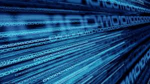
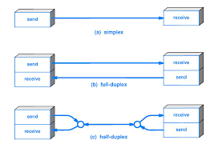

Data transmission is the process of devices sending data from one to another allowing devices to communicate. These transmissions occur through cables or radiowaves. Bit rate is used to measure the transmission rate of data. For example, a USB stand for universal serial bus, and can be used for data transmission, however if there is interference, they can prevent the successful transmission of data.
In simplex transmission, only one device can recieve and one transmit. This means data can only travel one way like a one way street.
In duplex transmission, data can be transmitted from both devices, where there is a path for dat going from a to b and also b to a. Data travels in both directions.